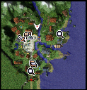
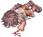
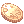
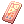

File list
Jump to navigation
Jump to search
This special page shows all uploaded files.
{kind=link}
{kind=link}
| Date | Name | Thumbnail | Size | User | Description | Versions |
|---|---|---|---|---|---|---|
| 17:33, 3 November 2015 | Youtube.png (file) | 17 KB | Adri | 1 | ||
| 17:33, 3 November 2015 | Twitter.png (file) |  |
19 KB | Adri | 1 | |
| 02:32, 4 November 2015 | MINIMAP Ancient Elven Ears.png (file) |  |
37 KB | Halves | NPC Location Minimap display. | 1 |
| 02:32, 4 November 2015 | MINIMAP Syringe in Mouth.jpg (file) | 23 KB | Halves | NPC Location Minimap display. | 1 | |
| 02:32, 4 November 2015 | MINIMAP Cherry Twig in Mouth.jpg (file) | 21 KB | Halves | NPC Location Minimap display. | 1 | |
| 02:33, 4 November 2015 | MINIMAP Donut in mouth.jpg (file) | 20 KB | Halves | NPC Location Minimap display. | 1 | |
| 04:03, 4 November 2015 | MINIMAP Fish in mouth.jpg (file) | 21 KB | Halves | 1 | ||
| 04:05, 4 November 2015 | MINIMAP Flower Crown.png (file) | 37 KB | Halves | NPC Location Minimap display. | 1 | |
| 04:06, 4 November 2015 | MINIMAP Gangster Scarf.png (file) |  |
45 KB | Halves | NPC Location Minimap display. | 1 |
| 04:06, 4 November 2015 | MINIMAP Musketeer Hat.jpg (file) |  |
20 KB | Halves | NPC Location Minimap display. | 1 |
| 04:07, 4 November 2015 | MINIMAP Neko Mimi Hat.jpg (file) |  |
23 KB | Halves | NPC Location Minimap display. | 1 |
| 04:07, 4 November 2015 | MINIMAP Orange in Mouth.jpg (file) |  |
16 KB | Halves | NPC Location Minimap display. | 1 |
| 04:08, 4 November 2015 | MINIMAP Pecopeco Hairband.png (file) |  |
43 KB | Halves | NPC Location Minimap display. | 1 |
| 04:09, 4 November 2015 | MINIMAP Puppy Hat.jpg (file) |  |
22 KB | Halves | NPC Location Minimap display. | 1 |
| 04:09, 4 November 2015 | MINIMAP Rideword Hat.jpg (file) |  |
7 KB | Halves | NPC Location Minimap display. | 1 |
| 04:09, 4 November 2015 | MINIMAP Soft Sheep Hat.png (file) |  | 35 KB | Halves | NPC Location Minimap display. | 1 |
| 04:10, 4 November 2015 | MINIMAP Spirit Whispers.png (file) |  |
8 KB | Halves | NPC Location Minimap display. | 1 |
| 04:11, 4 November 2015 | MINIMAP Wickebine Black Cat Ears.jpg (file) |  |
23 KB | Halves | NPC Location Minimap display. | 1 |
| 07:38, 4 November 2015 | 757.gif (file) | 30 KB | Adri | 1 | ||
| 07:55, 4 November 2015 | 621.gif (file) |  |
3 KB | Adri | 1 | |
| 07:55, 4 November 2015 | 919.gif (file) | 2 KB | Adri | 1 | ||
| 07:55, 4 November 2015 | 779.gif (file) |  |
32 KB | Adri | 1 | |
| 07:55, 4 November 2015 | 547.gif (file) |  |
5 KB | Adri | 1 | |
| 07:57, 4 November 2015 | 81.gif (file) |  |
5 KB | Adri | 1 | |
| 07:57, 4 November 2015 | 428.gif (file) | 15 KB | Adri | 1 | ||
| 07:58, 4 November 2015 | 497.gif (file) | 2 KB | Adri | 1 | ||
| 07:58, 4 November 2015 | 508.gif (file) |  |
4 KB | Adri | 1 | |
| 07:58, 4 November 2015 | 548.gif (file) | 17 KB | Adri | 1 | ||
| 07:58, 4 November 2015 | 635.gif (file) |  |
2 KB | Adri | 1 | |
| 07:58, 4 November 2015 | 679.gif (file) |  |
13 KB | Adri | 1 | |
| 07:58, 4 November 2015 | 849.gif (file) |  | 2 KB | Adri | 1 | |
| 07:59, 4 November 2015 | 890.gif (file) | 1 KB | Adri | 1 | ||
| 07:59, 4 November 2015 | 911.gif (file) | 2 KB | Adri | 1 | ||
| 07:59, 4 November 2015 | 1195.gif (file) |  |
18 KB | Adri | 1 | |
| 08:01, 4 November 2015 | TirayaBonnet.png (file) |  |
6 KB | Halves | Headgear Display. | 1 |
| 08:02, 4 November 2015 | MINIMAP Tiraya Bonnet.jpg (file) |  |
7 KB | Halves | NPC Location Minimap Display. | 1 |
| 08:04, 4 November 2015 | 681.gif (file) | 12 KB | Adri | 1 | ||
| 08:16, 4 November 2015 | 843.gif (file) |  |
11 KB | Adri | 1 | |
| 08:16, 4 November 2015 | 969.gif (file) |  |
20 KB | Adri | 1 | |
| 09:18, 4 November 2015 | NovaROMainOffice.jpg (file) | 111 KB | Pocky | 1 | ||
| 10:16, 4 November 2015 | WiseOldWoman.gif (file) |  |
1 KB | Pocky | 1 | |
| 10:36, 4 November 2015 | CostumeKid.gif (file) |  |
2 KB | Pocky | 1 | |
| 14:36, 4 November 2015 | GoldCoin.png (file) |  | 467 bytes | Adri | 1 | |
| 14:40, 4 November 2015 | LuckyHat.png (file) |  |
504 bytes | Adri | 1 | |
| 14:57, 4 November 2015 | ProofOfLoyalty.png (file) |  | 413 bytes | Adri | 1 | |
| 15:16, 4 November 2015 | GMAdri.png (file) |  |
11 KB | Adri | 1 | |
| 18:32, 4 November 2015 | EddgaDoll.png (file) |  |
575 bytes | Halves | 2 | |
| 18:10, 6 November 2015 | FoxHat.png (file) |  |
7 KB | Adri | 1 | |
| 18:12, 6 November 2015 | KitsuneMask.png (file) |  |
406 bytes | Adri | 1 | |
| 18:20, 6 November 2015 | MINIMAP Fox Hat.jpg (file) |  |
33 KB | Adri | 1 |
{kind=link}
{kind=link}
{kind=link}
{kind=link}
{kind=link}
{kind=link}
{kind=link}
{kind=link}
{kind=link}
{kind=link}
{kind=link}
{kind=link}
{kind=link}
{kind=link}
{kind=link}
{kind=link}
{kind=link}
{kind=link}
{kind=link}
{kind=link}
{kind=link}
{kind=link}
{kind=link}
{kind=link}